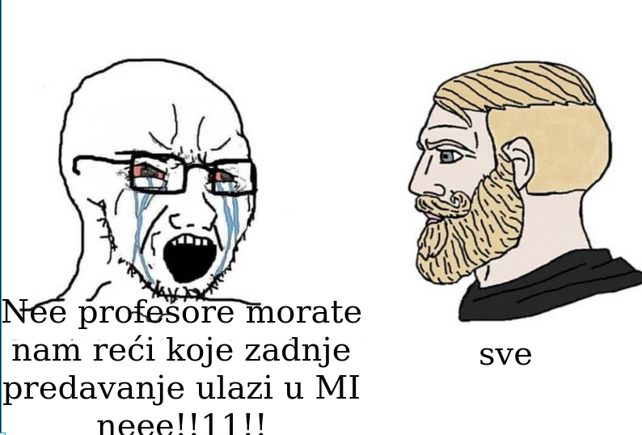

Me Ovo preseravanje Mikuca ne razumijem, što ne može odgovoriti normalno na pitanje, pošto su na predavanjima odradili dio 6, možda cijelu?
𝐓𝐇𝐄 𝐒𝐄𝐂𝐑𝐄𝐓 - 𝐂𝐋𝐔𝐁 budemo na ispitu onda ako bude neko pitanje “koje su najbolje… koje bi iskoristili…. ili nesto slicno” napisali odgovor “sve” HAHAHAAH
Mozda misli na sve koje su se obradile
Pitao sam ga koje je zadnje predavanje koje ulazi, svejedno je odgovorio “sve”
Rops citam sad 8 prezentaciju i 100% sam siguran da je govorio na zadnjem predavanju kak se zombi koristi kod skeniranja aplikacija.
Rops 
Rops pitaj ga “Je li istina da u gradivo MI-ja ulaze 1., 2., 3., 4., 5., 6., 7., i 8. prezentacija?”
𝐓𝐇𝐄 𝐒𝐄𝐂𝐑𝐄𝐓 - 𝐂𝐋𝐔𝐁 Sad i ja gledam 8. prez i kako je kolega gore rekao Erpeg - to se radilo na zadnjem predavanju 100%. Dakle ipak sve 😅
[obrisani korisnik] Sve.
Sretno, nadam se da ćete znat sve sutra.
Navedite sve što morate provjeriti da utvrdite valjanost digitalnog certifikata
Jaster111 to sve je potpis ili sam retarardiran?
DnkCkv ja nez, ja sam tu svasta pisao… provjera datuma pocetka valjanosti, provjera kraja valjanosti, provjera je li u opozvanima, provjera certifikacijskog tijela, idk
Jaster111 ja sam napisao provjera jel na listi opozvanih i provjera potpisa, ovo provjera pocetka i isteka valjanosti sam nekak pretpostavio da ak je istekao da je na listi opozvanih pa nisam pisao
Daeyarn meni to zvuci skroz dobro
Daeyarn Može biti opozvan i ako nije istekla valjanost.
jel se zna kad bi rezultati mogli doci
crocorax i bodovi iz labosa… ekipa se zajebava
jeste i vi dobili upola manje bodova nego sto ste mislili
crocorax da .
crocorax Legit pomislih da se to treba jos skalirat nekako, al izgleda da sam ipak jednostavno retard
ima li itko zapisana pitanja s meduispita?